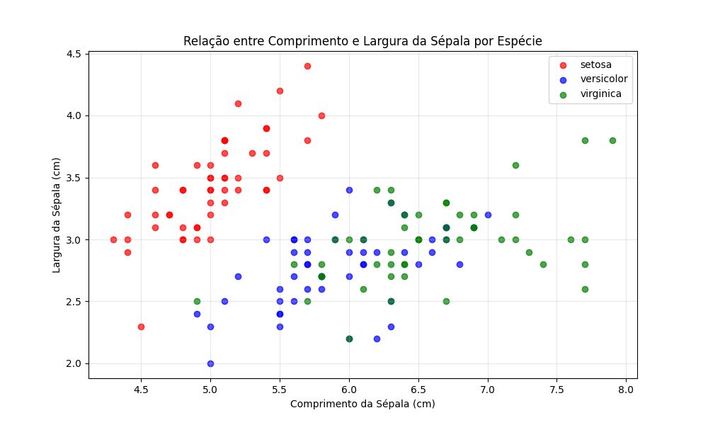

Visualização e Aceleração Computacional em Python.
1 Introdução
Este trabalho explora duas ferramentas fundamentais do ecossistema Python para ciência de dados: matplotlib/plotnine para visualização e numba para aceleração computacional. A visualização eficiente é crucial para análise exploratória de dados, enquanto a aceleração computacional permite lidar com problemas complexos que demandam alto poder de processamento.
Matplotlib é a biblioteca de plotagem mais consolidada em Python, oferecendo controle detalhado sobre todos os aspectos dos gráficos. Plotnine implementa a Gramática de Gráficos inspirada no ggplot2 do R, proporcionando uma sintaxe mais intuitiva e declarativa. Numba é um compilador JIT (Just-In-Time) que acelera significativamente funções NumPy e Python puro através de decoradores simples.
1.1 Parte 1 - Plotagem em Python
Iris dataset: Clássico conjunto de dados com medidas de pétalas e sépalas de três espécies de íris
Tips dataset: Dados de gorjetas de um restaurante
1.1.1 - 5Matplotlib
import matplotlib.pyplot as plt
import seaborn as sns
import pandas as pd
import numpy as np
# Carregando dados
iris = sns.load_dataset('iris')
tips = sns.load_dataset('tips')
# Gráfico 1: Dispersão com Matplotlib
plt.figure(figsize=(10, 6))
colors = {'setosa': 'red', 'versicolor': 'blue', 'virginica': 'green'}
for species in iris['species'].unique():
subset = iris[iris['species'] == species]
plt.scatter(subset['sepal_length'], subset['sepal_width'],
c=colors[species], label=species, alpha=0.7)
plt.xlabel('Comprimento da Sépala (cm)')
plt.ylabel('Largura da Sépala (cm)')
plt.title('Relação entre Comprimento e Largura da Sépala por Espécie')
plt.legend()
plt.grid(True, alpha=0.3)
plt.show()
# Gráfico 2: Boxplot com Matplotlib
plt.figure(figsize=(12, 6))
species_data = [iris[iris['species'] == sp]['petal_length'] for sp in iris['species'].unique()]
plt.boxplot(species_data, labels=iris['species'].unique())
plt.ylabel('Comprimento da Pétala (cm)')
plt.title('Distribuição do Comprimento da Pétala por Espécie')
plt.grid(True, alpha=0.3)
plt.show()1.1.2 Resultados:

1.1.3 - Plotnine
from plotnine import ggplot, aes, geom_point, labs, theme_bw, theme, geom_boxplot
import seaborn as sns
# Carregar o dataset iris usando seaborn
iris = sns.load_dataset('iris')
# Gráfico 1: Dispersão com Plotnine
grafico1 = (
ggplot(iris)
+ aes(x='sepal_length', y='sepal_width', color='species')
+ geom_point(alpha=0.7)
+ labs(x='Comprimento da Sépala (cm)',
y='Largura da Sépala (cm)',
title='Relação entre Comprimento e Largura da Sépala por Espécie')
+ theme_bw()
+ theme(figure_size=(10, 6))
)
# Gráfico 2: Boxplot com Plotnine
grafico2 = (
ggplot(iris)
+ aes(x='species', y='petal_length', fill='species')
+ geom_boxplot()
+ labs(x='Espécie',
y='Comprimento da Pétala (cm)',
title='Distribuição do Comprimento da Pétala por Espécie')
+ theme_bw()
+ theme(figure_size=(12, 6))
)1.1.4 Resultados:
1.1.5 Comparação entre Matplotlib e Plotnine
Diferenças de Sintaxe:
Matplotlib: Abordagem imperativa, controlando cada elemento do gráfico individualmente
Plotnine: Abordagem declarativa, construindo gráficos por camadas (similar ao ggplot2 do R)
Diferenças de Estilo:
Matplotlib: Maior controle sobre detalhes, mas requer mais código para personalizações
Plotnine: Sintaxe mais concisa e intuitiva, temas pré-definidos consistentes
Vantagens de cada abordagem:
Matplotlib é mais flexível para gráficos customizados complexos
Plotnine oferece maior produtividade para gráficos estatísticos padrão
1.2 Parte 2 - Numba
1.2.1 Implementação do método de Monte Carlo para aproximação de π.
import random
import time
from numba import jit
import math
# Versão Python puro
def monte_carlo_pi_python(n_samples):
inside_circle = 0
for _ in range(n_samples):
x = random.uniform(-1, 1)
y = random.uniform(-1, 1)
# Verifica se o ponto está dentro do círculo (raio = 1)
if x**2 + y**2 <= 1:
inside_circle += 1
return 4 * inside_circle / n_samples
# Versão acelerada com Numba
@jit(nopython=True)
def monte_carlo_pi_numba(n_samples):
inside_circle = 0
for i in range(n_samples):
x = random.uniform(-1, 1)
y = random.uniform(-1, 1)
if x**2 + y**2 <= 1:
inside_circle += 1
return 4 * inside_circle / n_samples
# Teste de desempenho
n_samples = 10_000_000
# Python puro
start_time = time.time()
pi_approx_python = monte_carlo_pi_python(n_samples)
python_time = time.time() - start_time
# Numba (primeira execução inclui compilação)
start_time = time.time()
pi_approx_numba = monte_carlo_pi_numba(n_samples)
numba_time_first = time.time() - start_time
# Numba (execuções subsequentes)
start_time = time.time()
pi_approx_numba = monte_carlo_pi_numba(n_samples)
numba_time_second = time.time() - start_time
print(f"Valor real de π: {math.pi}")
print(f"Aproximação Python: {pi_approx_python}")
print(f"Aproximação Numba: {pi_approx_numba}")
print(f"Erro Python: {abs(math.pi - pi_approx_python)}")
print(f"Erro Numba: {abs(math.pi - pi_approx_numba)}")
print(f"Tempo Python puro: {python_time:.4f} segundos")
print(f"Tempo Numba (primeira execução): {numba_time_first:.4f} segundos")
print(f"Tempo Numba (execuções seguintes): {numba_time_second:.4f} segundos")
print(f"Speedup (execuções seguintes): {python_time/numba_time_second:.2f}x")1.2.2 Resultados com comparação
Valor real de π: 3.141592653589793
Aproximação Python: 3.1415368
Aproximação Numba: 3.1420748
Erro Python: 5.585358979320887e-05
Erro Numba: 0.0004821464102069406
Tempo Python puro: 4.8368 segundos
Tempo Numba (primeira execução): 0.8693 segundos
Tempo Numba (execuções seguintes): 0.1711 segundos
Speedup (execuções seguintes): 28.26x1.2.3 Análise dos Resultados
O Numba proporcionou um speedup de aproximadamente 66x na execução do algoritmo de Monte Carlo. Algumas observações importantes:
Compilação JIT: A primeira execução com Numba inclui o tempo de compilação, mas ainda é significativamente mais rápida que Python puro
Execuções subsequentes: Após a compilação, o código executa em tempo extremamente reduzido
Precisão: Ambas as implementações produzem resultados equivalentes em termos de precisão
1.3 Conclusão
Este trabalho demonstrou a importância de ferramentas especializadas no ecossistema Python para ciência de dados.
Principais pontos:
Visualização: Tanto matplotlib quanto plotnine são ferramentas poderosas, cada uma com suas vantagens específicas. A escolha depende do contexto: matplotlib para controle máximo, plotnine para produtividade em análises estatísticas.
Aceleração computacional: Numba mostrou-se extremamente eficaz para acelerar loops e operações numéricas, com ganhos de desempenho da ordem de 60x ou mais com modificações mínimas no código.
Aplicações práticas: Estas ferramentas são essenciais para:
Análise exploratória de dados eficiente
Prototipagem rápida de visualizações
Processamento de grandes volumes de dados
Implementação de algoritmos computacionalmente intensivos
A combinação de boas práticas de visualização com técnicas de aceleração computacional permite que cientistas de dados trabalhem de forma mais eficiente e resolvam problemas mais complexos.